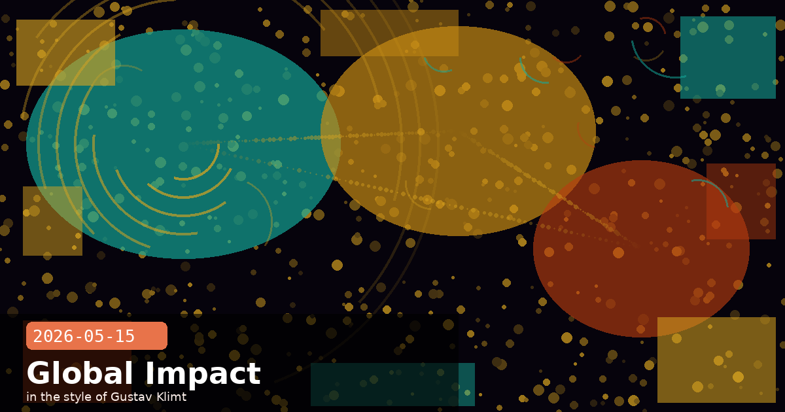

Gates Foundation $200M Pact, PwC's 30,000-Staff Claude Rollout & the Legal AI Playbook

🧭 Anthropic and the Gates Foundation Commit $200 Million to AI for Global Health, Education & Agriculture
Anthropic and the Gates Foundation have announced a four-year, $200 million initiative to deploy Claude across some of the world's hardest public-health, education, and agricultural challenges. The partnership pairs the Gates Foundation's grant funding, programme expertise, and global networks with Anthropic's contribution of Claude usage credits and technical staff from its Beneficial Deployments team. The focus is deliberately on populations currently underserved by AI: the 4.6 billion people worldwide who lack access to essential health services, smallholder farmers making real-time crop decisions with limited data, and K–12 students in low-resource classrooms across sub-Saharan Africa, India, and the United States.
Three programme pillars
Global Health & Life Sciences — Claude-assisted tools for vaccine and therapy development, health data synthesis, and decision support for community health workers in low- and middle-income countries. Priority diseases include polio eradication, HPV, and eclampsia/preeclampsia — conditions where timely access to information directly saves lives.
Education — AI-powered foundational literacy and numeracy apps, evidence-based tutoring systems, and career-guidance tools for students across the US, sub-Saharan Africa, and India. Co-developed with local educators and measured against learning-outcome benchmarks rather than engagement metrics.
Agriculture & Economic Mobility — Locally-relevant decision tools delivered in local languages to help smallholder farmers act on real-time data (weather, soil, pricing). Complementary tools around portable skills records and employment guidance aim to broaden economic mobility for workers in informal economies.
The "Beneficial Deployments" model — what it means in practice
Anthropic's Beneficial Deployments team doesn't just grant API credits and walk away. The team embeds with partners to build shared datasets, evaluation benchmarks, and model fine-tunes specifically calibrated for the partner's domain. For the Gates Foundation, this means Claude outputs will be validated against public-health evidence bases before being deployed to community health workers — the same rigour applied to pharmaceutical trial data. If you're building Claude applications for non-profit or humanitarian use cases, this team is the right contact point at Anthropic.
🧭 PwC Expands Anthropic Alliance: 30,000 Professionals Certified, Claude Code Across Hundreds of Thousands of Staff
PwC and Anthropic announced a deepened strategic alliance yesterday, with PwC committing to train and certify 30,000 professionals on Claude through a joint Center of Excellence, while extending Claude Code and Claude Cowork access toward its global workforce of hundreds of thousands. The partnership targets what Anthropic and PwC estimate is a $2 trillion drag from outdated enterprise infrastructure — the combination of legacy codebases, manual workflows, and fragmented data that prevents large organisations from moving at the pace the market now demands.
What PwC is actually building with Claude
PwC's deployment is organised into three interlocking tracks:
Agentic technology build — Engineering teams are now shipping production software in weeks rather than quarters by combining Claude Code (for code generation and review) with Claude Cowork (for cross-team context). A mainframe modernisation engagement that previously ran six months is now completing in six weeks.
AI-native deal-making — Diligence, value-creation modelling, and post-merger integration workflows are being rebuilt with Claude as the primary reasoning layer. Early results show compression of due-diligence cycles from weeks to days and deeper coverage of target-company documentation.
Enterprise function reinvention — Finance, supply chain, HR, and cybersecurity operating models are being rebuilt from scratch rather than patched. PwC launched a standalone "Office of the CFO" business group built natively on Claude — the first such unit anchored in Anthropic's technology stack.
Production results already in the field
Insurance underwriting cycles compressed from 10 weeks to 10 days
Incident response accelerated from hours to minutes
Delivery-time improvements of up to 70% across reported client deployments
Why Claude Code is the anchor product, not just Claude
PwC's deployment is notable because the acceleration is driven not just by Claude chat interfaces but by Claude Code embedded in developer workflows. When professional services firms commit to Claude Code at this scale, it validates a pattern: the highest-leverage AI deployment in knowledge work isn't automating individual tasks — it's accelerating the software that runs the business. If you're evaluating AI for your organisation, ask not just "can Claude answer questions?" but "can Claude Code ship the internal tools your teams need in a fraction of the time?"
PwCenterprise AIClaude CodeCenter of Excellenceagentic workflowsmainframe modernisationprofessional services
🧭 Anthropic's Legal AI Webinar: Contract Review, eDiscovery & Matter Management in Production
Today at 10:00 am PT, Anthropic hosted How Legal Teams Put Claude to Work — a Partner Series webinar spotlighting how in-house legal departments and law firms have moved beyond ChatGPT experiments to running Claude in production. Speakers Mark Pike (Legal Counsel at Anthropic) and Harry Liu (Applied AI at Anthropic) walked through real-world adoption patterns and the use cases generating the most measurable ROI right now.
The four use cases generating the most traction
Contract review and redlining — Claude reads a contract, identifies non-standard clauses against a playbook, and produces a marked-up version with commentary. Firms report this compresses first-pass review from 2–4 hours to under 20 minutes per contract.
Clause extraction and tagging — Bulk processing of legacy contract libraries to extract key terms (renewal dates, liability caps, governing law, SLA commitments) into structured spreadsheets. Particularly valuable ahead of acquisitions and audits.
eDiscovery document triage — Claude classifies and summarises large document sets for responsiveness and privilege before attorney review, dramatically cutting review hours in litigation. The session noted Claude's 200k token context window as critical here — whole tranches of documents can be analysed in a single pass rather than chunk-by-chunk.
Matter management and drafting — Claude drafting demand letters, NDAs, policy Q&A responses, and internal legal memos from brief prompts, with attorneys reviewing the output rather than writing from scratch.
The playbook structure that legal teams use most effectively
The most successful legal Claude deployments share a common pattern: a canonical playbook document (the firm's standard positions on key clauses) is embedded in the system prompt or prepended to every contract-review request. Claude then compares the incoming contract against that playbook rather than working from generic legal knowledge. This dramatically improves the accuracy of redlining — Claude flags actual deviations from your standards, not hypothetical deviations from some average firm's standards. If you're setting this up, start with a 5–10 page playbook covering your top 20 most-negotiated clauses, test it on 10–15 representative contracts you already know the answers to, and refine before rolling out to the broader team.
# Minimal system prompt structure for contract review:
# ─────────────────────────────────────────────────────
# You are a legal contract reviewer for [Firm Name].
#
# PLAYBOOK (authoritative — your standard positions):
# {paste the firm's clause-level playbook here}
#
# TASK:
# Review the contract below. For each clause that deviates
# from the playbook, output:
# - Clause name
# - Deviation from playbook (one sentence)
# - Risk level: Low / Medium / High
# - Recommended redline (exact replacement text)
#
# CONTRACT:
# {paste contract text}